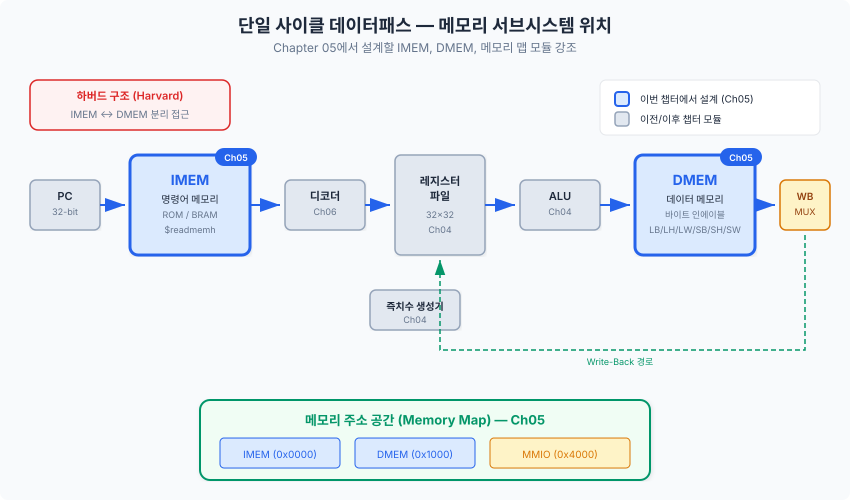
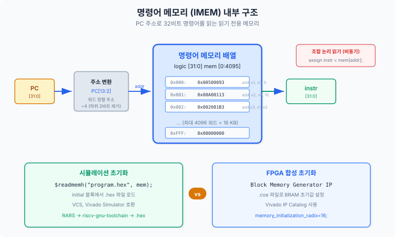
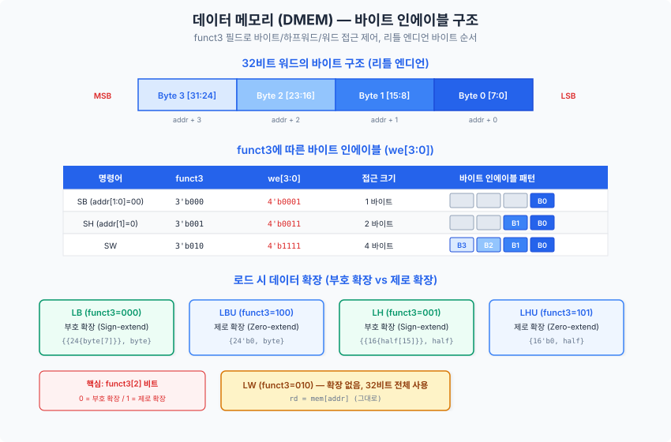
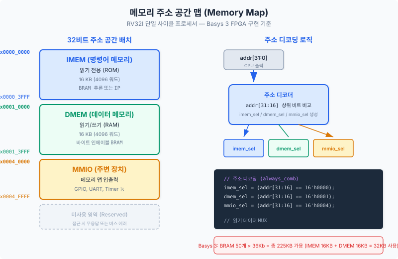

Chapter 04에서 ALU와 레지스터 파일을 완성했습니다. 이제 프로세서에 "기억"을 부여할 차례입니다. 이 챕터에서는 명령어를 저장하는 명령어 메모리(Instruction Memory)와 데이터를 읽고 쓰는 데이터 메모리(Data Memory)를 각각 설계하고, 두 메모리가 공존하는 주소 공간(Address Space)을 체계적으로 구성합니다. 바이트 단위 접근, 리틀 엔디언(Little-Endian) 저장 방식, FPGA의 블록 RAM(Block RAM, BRAM) 추론 규칙까지 실무에서 반드시 알아야 할 개념들을 코드와 함께 익힙니다.
단일 사이클 프로세서(Single-Cycle Processor)를 조립하는 과정을 건물 공사에 비유하면, Chapter 04에서 철근(ALU)과 콘크리트 블록(레지스터 파일)을 준비했습니다. 이번 챕터에서는 그 재료들을 올려놓을 바닥(메모리)을 설계합니다. 아무리 강력한 ALU가 있어도 명령어를 가져올 곳이 없으면 프로세서는 동작할 수 없고, 계산 결과를 저장할 공간이 없으면 연산의 의미가 사라집니다.
RV32I 단일 사이클 데이터패스의 신호 흐름은 왼쪽에서 오른쪽으로 진행됩니다. 프로그램 카운터(Program Counter, PC)가 주소를 생성하면, 명령어 메모리(IMEM)가 해당 주소의 32비트 명령어를 출력합니다. 명령어가 로드(Load) 또는 스토어(Store) 명령어일 경우, ALU가 계산한 유효 주소(Effective Address)로 데이터 메모리(DMEM)에 접근합니다. 두 메모리 블록은 각각 다른 클럭 동작과 포트 구성을 갖기 때문에 분리하여 설계합니다.

컴퓨터 아키텍처(Computer Architecture) 역사에서 메모리 조직 방식은 두 가지 큰 흐름으로 나뉩니다.
폰 노이만 구조(Von Neumann Architecture 또는 Princeton Architecture)는 명령어와 데이터를 하나의 메모리에 함께 저장합니다. 구조가 단순하고 메모리를 유연하게 활용할 수 있다는 장점이 있습니다. 현대 PC의 메인 메모리(DRAM)가 이 방식을 따릅니다. 그러나 명령어 읽기와 데이터 읽기/쓰기가 같은 버스(Bus)를 공유하므로, 한 클럭 사이클에 두 접근이 동시에 일어날 수 없다는 병목(Bottleneck)이 생깁니다. 이를 폰 노이만 병목(Von Neumann Bottleneck)이라 부릅니다.
하버드 구조(Harvard Architecture)는 명령어 메모리와 데이터 메모리를 물리적으로 분리하여 별도의 버스로 접근합니다. 단일 사이클 프로세서에서는 하나의 클럭 안에 명령어 인출(Instruction Fetch)과 데이터 메모리 접근이 동시에 일어나야 합니다. 만약 두 메모리가 하나로 합쳐져 있다면, 같은 사이클에 두 번 읽거나 읽기와 쓰기를 동시에 수행할 수 없습니다. 따라서 FPGA 기반 단일 사이클 프로세서 설계에서는 하버드 구조를 채택하는 것이 표준적인 접근법입니다.
다음 표는 이번 챕터에서 설계할 세 모듈의 핵심 특성을 미리 정리한 것입니다. 각 절에서 세부 내용을 다루기 전에 전체 그림을 파악하면 학습 흐름을 놓치지 않습니다.
| 모듈 | 읽기 | 쓰기 | FPGA 자원 | 초기화 |
|---|---|---|---|---|
imem |
비동기 (조합 논리) | 없음 (ROM) | BRAM 또는 분산 RAM | $readmemh / COE 파일 |
dmem |
비동기 (조합 논리) | 동기 (클럭 상승 에지) | BRAM (바이트 인에이블) | 초기화 없음 (런타임 쓰기) |
memory_map |
조합 논리 (선택 신호) | 해당 없음 | LUT | 해당 없음 |
이제 각 모듈을 차례로 설계하겠습니다. 5.2절에서 IMEM, 5.3절에서 DMEM, 5.4절에서 메모리 맵, 5.5절에서 통합 테스트벤치를 다룹니다.
프로세서가 첫 번째로 접근하는 메모리는 명령어 메모리(Instruction Memory, IMEM)입니다. 프로그램 카운터(PC)가 가리키는 주소에서 32비트 명령어를 읽어 오는 이 모듈은 쓰기 기능이 없는 읽기 전용 메모리(Read-Only Memory, ROM)처럼 동작합니다. 설계는 단순해 보이지만, FPGA 합성 도구가 이를 어떤 자원으로 매핑하는지, 시뮬레이션과 합성을 동시에 고려한 초기화 방법은 무엇인지를 이해하면 실제 FPGA 구현에서 발생하는 많은 문제를 예방할 수 있습니다.
단일 사이클 프로세서에서 IMEM은 매 클럭 사이클마다 한 번씩 읽힙니다. PC가 갱신되면 새 주소로 IMEM을 즉시 읽어야 하므로, 읽기는 반드시 비동기(Asynchronous), 즉 조합 논리(Combinational Logic)로 구현해야 합니다. 만약 읽기에 클럭이 필요하다면 1사이클의 지연이 생겨 단일 사이클 동작이 불가능해집니다. 이 점은 Chapter 04의 레지스터 파일 설계에서 배운 원칙과 동일합니다.

RISC-V는 바이트 주소 지정 방식(Byte-Addressable)을 사용합니다.
PC는 항상 4의 배수 주소를 가리키므로 하위 2비트는 항상 2'b00입니다.
메모리 배열(Array)은 워드(4바이트) 단위로 구성되어 있으므로,
바이트 주소를 워드 인덱스로 변환하려면 주소를 오른쪽으로 2비트 시프트(addr[31:2])하면 됩니다.
예를 들어, 바이트 주소 0x00000008은 워드 인덱스 2에 해당합니다.
// 명령어 메모리 — 단일 사이클용 ROM
// Vivado에서 BRAM 또는 분산 RAM(Distributed RAM)으로 합성됨
// IEEE 1800-2017 준수 / 합성 가능(Synthesizable)
module imem #(
parameter DEPTH = 256 // 명령어 개수 (1KB = 256 × 4바이트)
)(
input logic [31:0] addr, // 바이트 주소 (하위 2비트는 항상 0)
output logic [31:0] instr // 32비트 명령어 출력
);
// 워드 단위 2차원 배열 — 합성 도구가 ROM으로 추론
logic [31:0] mem [0:DEPTH-1];
// -------------------------------------------------------
// 시뮬레이션용 초기화: $readmemh로 hex 파일을 읽어 들임
// 합성 시에는 이 구문이 무시될 수 있으므로,
// Vivado BRAM IP를 사용할 경우 COE 파일로 별도 초기화 필요
// -------------------------------------------------------
initial $readmemh("program.hex", mem);
// 비동기 읽기 — 워드 주소로 변환하여 즉시 출력
// addr[31:2]: 하위 2비트(바이트 오프셋) 무시
assign instr = mem[addr[31:2]];
endmodule
Xilinx/AMD FPGA에서 배열 선언만으로도 합성 도구가 자동으로 최적의 자원을 선택합니다. 이를 메모리 추론(Memory Inference)이라 합니다. 합성 도구가 BRAM(Block RAM)을 선택할지, 분산 RAM(Distributed RAM, LUT 기반)을 선택할지는 배열의 크기와 포트 구성에 따라 결정됩니다.
| 특성 | BRAM (Block RAM) | 분산 RAM (Distributed RAM) |
|---|---|---|
| FPGA 자원 | 전용 BRAM 타일 | 슬라이스 LUT |
| 읽기 방식 | 기본: 동기 (레지스터 출력) | 비동기 가능 |
| 단일 사이클 적합성 | 주의 필요 (출력 레지스터 비활성화 필요) | 적합 |
| 용량 | 크다 (18Kb, 36Kb 단위) | 작다 (용량 증가 시 LUT 소모 급증) |
| 합성 권장 크기 | 512바이트 이상 | 512바이트 미만 |
$readmemh가 읽는 HEX 파일은 각 줄에 16진수 워드 값을 기록합니다.
아래는 addi x1, x0, 1 (x1 = 0 + 1) 과 addi x2, x0, 2 두 명령어를 담은 예시입니다.
// program.hex — RISC-V 기계어 코드 예시
// addi x1, x0, 1 → 0x00100093
00100093
// addi x2, x0, 2 → 0x00200113
00200113
// add x3, x1, x2 → 0x002081B3
002081B3
// nop (addi x0, x0, 0)
00000013
RISC-V 어셈블러(Assembler)가 생성한 ELF 파일에서 objcopy 또는 Python 스크립트를 사용하여
이 형식의 HEX 파일을 생성할 수 있습니다.
Chapter 09(소프트웨어 툴체인)에서 자동화 방법을 상세히 다룹니다.
구현 전 워드 주소 변환이 올바른지 직접 확인해 보겠습니다.
DEPTH = 256일 때 유효 주소 범위는 0x00000000부터 0x000003FC(= 255 × 4)까지입니다.
addr[31:2]는 32비트 주소에서 상위 30비트를 워드 인덱스로 사용하며,
이를 통해 최대 230개의 워드를 주소 지정할 수 있습니다.
실제 DEPTH 크기만큼만 배열이 존재하므로, 범위를 벗어난 접근은 시뮬레이션에서
부정값(X)을 반환하여 설계 오류를 쉽게 발견할 수 있습니다.
데이터 메모리(Data Memory, DMEM)는 IMEM보다 복잡합니다.
RISC-V의 로드(Load) 명령어 집합만 보더라도 LW(워드 로드),
LH(하프워드 부호 확장 로드), LHU(하프워드 무부호 로드),
LB(바이트 부호 확장 로드), LBU(바이트 무부호 로드)
다섯 가지를 지원해야 합니다.
스토어(Store)도 SW, SH, SB 세 가지가 있습니다.
이 모든 접근 방식을 하나의 메모리 모듈로 처리하려면 바이트 인에이블(Byte Enable)
메커니즘이 필요합니다.
바이트 인에이블(Byte Enable)은 32비트 워드의 4개 바이트 중 어느 바이트를 쓸지를
4비트 마스크로 지정하는 신호입니다.
be[0]은 최하위 바이트(addr+0), be[3]은 최상위 바이트(addr+3)에 대응합니다.
| 명령어 | 바이트 인에이블 (be[3:0]) | 설명 |
|---|---|---|
SW (스토어 워드) |
4'b1111 |
4바이트 모두 쓰기 |
SH (스토어 하프워드), addr 짝수 |
4'b0011 |
하위 2바이트만 쓰기 |
SB (스토어 바이트), addr 최하위 |
4'b0001 |
최하위 바이트만 쓰기 |
바이트 인에이블 신호는 DMEM 내부에서 생성하지 않고, 외부의 제어 유닛(Chapter 06)이나
로드-스토어 유닛(Load-Store Unit)이 명령어 타입에 따라 생성하여 DMEM에 전달합니다.
DMEM은 단순히 전달받은 be 신호에 따라 해당 바이트만 쓰면 됩니다.

RISC-V는 리틀 엔디언(Little-Endian) 바이트 순서를 기본으로 합니다.
리틀 엔디언에서는 다중 바이트 값의 최하위 바이트(Least Significant Byte, LSB)를
가장 낮은 주소에 저장합니다.
예를 들어, 0xDEADBEEF를 주소 0x1000에 저장하면:
addr 0x1000: 0xEF (최하위 바이트)addr 0x1001: 0xBEaddr 0x1002: 0xADaddr 0x1003: 0xDE (최상위 바이트)// 데이터 메모리 — 바이트 인에이블(Byte Enable) 지원
// 동기 쓰기 / 비동기 읽기 — 단일 사이클 프로세서 호환
// IEEE 1800-2017 준수 / 합성 가능(Synthesizable)
module dmem #(
parameter DEPTH = 256 // 워드 개수 (1KB = 256 × 4바이트)
)(
input logic clk, // 클럭 (쓰기에만 사용)
input logic we, // 쓰기 인에이블 (Write Enable)
input logic [3:0] be, // 바이트 인에이블 (Byte Enable)
input logic [31:0] addr, // 바이트 주소
input logic [31:0] wdata, // 쓰기 데이터 (Write Data)
output logic [31:0] rdata // 읽기 데이터 (Read Data) — 비동기
);
// 바이트 단위 메모리 배열 — BRAM 추론 가능
// 총 크기: DEPTH × 4 바이트 = 1KB (DEPTH=256일 때)
logic [7:0] mem [0:DEPTH*4-1];
// -------------------------------------------------------
// 동기 쓰기 — 바이트 인에이블에 따라 해당 바이트만 갱신
// RISC-V 리틀 엔디언(Little-Endian): 낮은 주소 = 낮은 바이트
// -------------------------------------------------------
always_ff @(posedge clk) begin
if (we) begin
// be[0]: 최하위 바이트 (addr+0) — wdata[7:0]
if (be[0]) mem[addr+0] <= wdata[7:0];
// be[1]: 두 번째 바이트 (addr+1) — wdata[15:8]
if (be[1]) mem[addr+1] <= wdata[15:8];
// be[2]: 세 번째 바이트 (addr+2) — wdata[23:16]
if (be[2]) mem[addr+2] <= wdata[23:16];
// be[3]: 최상위 바이트 (addr+3) — wdata[31:24]
if (be[3]) mem[addr+3] <= wdata[31:24];
end
end
// -------------------------------------------------------
// 비동기 읽기 — 리틀 엔디언 조합으로 32비트 워드 재구성
// {최상위, ..., 최하위} 순서로 결합
// -------------------------------------------------------
assign rdata = {mem[addr+3], mem[addr+2], mem[addr+1], mem[addr+0]};
endmodule
DMEM 자체는 항상 32비트 rdata를 출력합니다.
바이트 또는 하프워드 로드 명령어의 경우, 실제 읽은 값이 rdata의 하위 비트에 담기므로
상위 비트를 부호 확장(Sign Extension)하거나 0으로 채우는 것은
DMEM 외부, 즉 로드-스토어 유닛 또는 데이터패스의 부호 확장 회로가 담당합니다.
이 분리 원칙 덕분에 DMEM은 단순하게 유지되고, 부호 확장 로직은 독립적으로 검증할 수 있습니다.
예를 들어, 주소 0x1000에 LB 명령어로 접근한다면:
rdata = {mem[0x1003], mem[0x1002], mem[0x1001], mem[0x1000]}을 출력합니다.rdata[7:0]을 추출합니다.rdata[7])를 24비트 복사하여 32비트로 부호 확장합니다.
위 구현에서 바이트 단위 배열(logic [7:0] mem [0:DEPTH*4-1])을 사용한 것은
바이트 인에이블을 직관적으로 표현하기 위함입니다.
Vivado 합성 도구는 이 패턴을 인식하여 BRAM의 바이트 쓰기 인에이블(Byte Write Enable) 기능으로
매핑할 수 있습니다. Basys 3의 Artix-7 FPGA는 18Kb BRAM을 50개 보유하고 있으므로
수 KB 크기의 DMEM도 충분히 수용합니다.
합성 후 Vivado의 "Implementation → Report Utilization" 창에서
RAMB18E1 또는 RAMB36E1 프리미티브(Primitive)가 나타나면
BRAM 추론이 성공한 것입니다. 이 프리미티브가 보이지 않고 FDRE(플립플롭)가
다수 사용되었다면, 분산 RAM이나 플립플롭으로 구현된 것이며 자원 효율이 낮습니다.
단일 프로세서 시스템에서도 "어떤 주소가 어떤 장치에 대응하는가"를 명확히 정의해야 합니다. 이 정의를 메모리 맵(Memory Map)이라 하며, 시스템 설계의 시작점이 됩니다. 메모리 맵이 없으면 CPU가 임의의 주소로 접근했을 때 어떤 장치가 응답해야 하는지 결정할 수 없고, 소프트웨어와 하드웨어 팀이 동일한 기준으로 협력할 수도 없습니다. 메모리 맵은 단순한 표 한 장이지만, 시스템 전체의 설계를 지배하는 계약서와 같습니다.
이 챕터의 시스템은 세 영역으로 주소 공간을 분할합니다. 각 영역은 크기가 2의 거듭제곱이 되도록 설계하여 주소 디코딩 하드웨어를 최소화합니다.

| 영역 | 시작 주소 | 끝 주소 | 크기 | 용도 |
|---|---|---|---|---|
| IMEM | 0x0000_0000 |
0x0000_03FF |
1KB | 명령어 저장 (ROM) |
| DMEM | 0x0001_0000 |
0x0001_03FF |
1KB | 데이터 저장 (RAM) |
| MMIO | 0x0002_0000 |
0x0002_FFFF |
64KB | 메모리 맵 입출력 (GPIO, UART 등) |
MMIO(Memory-Mapped I/O, 메모리 맵 입출력)는 주변 장치(Peripheral Device)를 메모리 주소로
접근하는 방식입니다. CPU는 UART나 GPIO를 접근할 때도 일반 메모리 접근과 동일한
SW/LW 명령어를 사용하고, 주소 디코더가 해당 주소를 주변 장치로 라우팅합니다.
Chapter 11에서 AMBA APB 버스를 통한 MMIO 구현을 상세히 다룹니다.
주소 디코딩(Address Decoding)은 32비트 주소의 상위 비트를 검사하여 어느 장치에 접근할지 선택 신호를 생성합니다. 2의 거듭제곱 크기로 영역을 정렬하면, 각 영역의 기준 비트만 비교하면 되므로 하드웨어가 단순해집니다.
각 영역의 디코딩 기준을 분석합니다.
[31:10]가 22'h000000 → 하위 10비트가 오프셋 (1KB = 210)[31:10]가 22'h000040 → 0x0001_0000 >> 10 = 0x40[31:16]가 16'h0002 → 하위 16비트가 오프셋 (64KB = 216)// 메모리 맵 — 주소 공간 분할 및 선택 신호 생성
// 주소 공간:
// 0x0000_0000 ~ 0x0000_03FF : IMEM (1KB)
// 0x0001_0000 ~ 0x0001_03FF : DMEM (1KB)
// 0x0002_0000 ~ 0x0002_FFFF : MMIO (주변 장치 64KB)
// IEEE 1800-2017 준수 / 합성 가능(Synthesizable)
module memory_map (
input logic [31:0] addr, // 32비트 바이트 주소
output logic imem_sel, // IMEM 선택 신호 (Active High)
output logic dmem_sel, // DMEM 선택 신호 (Active High)
output logic mmio_sel // MMIO 선택 신호 (Active High)
);
// IMEM: addr[31:10] == 22'h0 (0x0000_0000 ~ 0x0000_03FF)
assign imem_sel = (addr[31:10] == 22'h0);
// DMEM: addr[31:10] == 22'h40
// 근거: 0x0001_0000을 10비트 오른쪽 시프트 → 0x40
assign dmem_sel = (addr[31:10] == 22'h40);
// MMIO: addr[31:16] == 16'h2
// 근거: 0x0002_xxxx의 상위 16비트 = 0x0002
assign mmio_sel = (addr[31:16] == 16'h2);
endmodule
주소 디코더가 생성한 선택 신호로 데이터 버스를 멀티플렉싱(Multiplexing)합니다. CPU의 데이터 버스는 하나이므로, 어떤 장치가 읽기 데이터를 드라이브할지 선택 신호로 결정합니다.
// 상위 모듈에서의 메모리 접근 라우팅 예시 (개념 코드)
// 실제 구현은 Chapter 06 데이터패스 통합에서 완성됩니다
module mem_subsystem (
input logic clk,
input logic we,
input logic [3:0] be,
input logic [31:0] pc, // 명령어 주소 (IMEM 전용)
input logic [31:0] alu_out, // 데이터 주소 (DMEM/MMIO)
input logic [31:0] wdata,
output logic [31:0] instr, // IMEM 출력
output logic [31:0] rdata // DMEM 또는 MMIO 읽기 데이터
);
// 내부 신호
logic imem_sel, dmem_sel, mmio_sel;
logic [31:0] dmem_rdata, mmio_rdata;
// 주소 디코더 인스턴스 (데이터 주소 디코딩)
memory_map u_mmap (
.addr (alu_out),
.imem_sel (imem_sel),
.dmem_sel (dmem_sel),
.mmio_sel (mmio_sel)
);
// 명령어 메모리 — PC로 직접 접근
imem u_imem (
.addr (pc),
.instr (instr)
);
// 데이터 메모리
dmem u_dmem (
.clk (clk),
.we (we & dmem_sel), // DMEM 영역일 때만 쓰기
.be (be),
.addr (alu_out),
.wdata (wdata),
.rdata (dmem_rdata)
);
// 읽기 데이터 멀티플렉서 (DMEM 또는 MMIO 선택)
// MMIO는 Chapter 11에서 구현; 현재는 0으로 처리
assign mmio_rdata = 32'h0;
assign rdata = dmem_sel ? dmem_rdata :
mmio_sel ? mmio_rdata : 32'h0;
endmodule
주소 디코더는 순수 조합 논리이므로, 주소가 안정적으로 확정된 후에만 선택 신호가 유효합니다. 단일 사이클 프로세서에서는 ALU 연산이 끝나고 나서 주소가 확정되므로, 주소 디코더의 전파 지연(Propagation Delay)이 전체 클럭 주기 타이밍에 영향을 줍니다. Vivado 타이밍 보고서(Timing Report)에서 데이터 경로 중 가장 느린 구간(Critical Path)을 확인하고, 필요하다면 파이프라인 레지스터를 삽입하는 방법을 Chapter 07에서 다룹니다.
설계한 IMEM과 DMEM이 올바르게 동작하는지 검증하는 것은 구현만큼 중요합니다. "테스트하지 않은 코드는 동작하지 않는 코드"라는 말처럼, 체계적인 테스트벤치(Testbench) 없이는 설계 오류를 보장할 수 없습니다. 이 절에서는 바이트, 하프워드, 워드 접근을 모두 검증하는 자가 검증(Self-Checking) 테스트벤치를 작성합니다. 자가 검증 테스트벤치는 파형 창을 직접 눈으로 확인하지 않아도, 시뮬레이터 콘솔 출력만으로 합격/불합격을 판정합니다.
효과적인 메모리 테스트벤치는 다음 시나리오를 순서대로 검증합니다.
SW→LW 시퀀스로 기본 동작 확인0xDEADBEEF의 각 바이트 위치)be=4'b0011로 하위 2바이트만 쓰고 확인// DMEM 자가 검증 테스트벤치 — 바이트/하프워드/워드 접근 검증
// 시뮬레이션 전용 — 합성 불필요
`timescale 1ns/1ps
module dmem_tb;
// -------------------------------------------------------
// 신호 선언
// -------------------------------------------------------
logic clk = 1'b0; // 클럭: 10ns 주기 (100MHz)
logic we;
logic [3:0] be;
logic [31:0] addr, wdata, rdata;
// DUT(Device Under Test) 인스턴스화
// .*: 이름 기반 자동 연결
dmem dut (.*);
// 클럭 생성: 5ns마다 반전 → 10ns 주기
always #5 clk = ~clk;
// -------------------------------------------------------
// 태스크: 워드 쓰기 (be=4'hF, 4바이트 모두)
// -------------------------------------------------------
task automatic write_word(input [31:0] a, d);
@(posedge clk); // 클럭 상승 에지 동기화
addr = a; wdata = d; we = 1'b1; be = 4'hF;
@(posedge clk); // 쓰기 완료 대기
we = 1'b0;
endtask
// -------------------------------------------------------
// 태스크: 하프워드 쓰기 (하위 2바이트 be=4'b0011)
// -------------------------------------------------------
task automatic write_half(input [31:0] a, input [15:0] d);
@(posedge clk);
addr = a; wdata = {16'h0, d}; we = 1'b1; be = 4'b0011;
@(posedge clk);
we = 1'b0;
endtask
// -------------------------------------------------------
// 태스크: 바이트 쓰기 (최하위 바이트 be=4'b0001)
// -------------------------------------------------------
task automatic write_byte(input [31:0] a, input [7:0] d);
@(posedge clk);
addr = a; wdata = {24'h0, d}; we = 1'b1; be = 4'b0001;
@(posedge clk);
we = 1'b0;
endtask
// -------------------------------------------------------
// 태스크: 읽기 검증 — 기대값과 비교하여 PASS/FAIL 출력
// -------------------------------------------------------
task automatic check_read(
input [31:0] a,
input [31:0] exp,
input string desc
);
addr = a;
#1; // 조합 논리 안정화 대기 (1ns)
if (rdata !== exp)
$display("FAIL [%s]: got=0x%08h exp=0x%08h addr=0x%08h",
desc, rdata, exp, a);
else
$display("PASS [%s]", desc);
endtask
// -------------------------------------------------------
// 메인 테스트 시퀀스
// -------------------------------------------------------
initial begin
// 초기화
we = 1'b0; be = 4'h0; addr = 32'h0; wdata = 32'h0;
repeat(2) @(posedge clk); // 초기 안정화
// --------------------------------------------------
// 테스트 1: 워드 쓰기 및 읽기
// --------------------------------------------------
$display("=== 테스트 1: 워드 쓰기/읽기 ===");
write_word(32'h0001_0000, 32'hDEAD_BEEF);
check_read(32'h0001_0000, 32'hDEAD_BEEF, "워드 로드 (LW)");
// --------------------------------------------------
// 테스트 2: 리틀 엔디언 바이트 저장 순서 검증
// 0xDEADBEEF → mem[0x1000]=0xEF, mem[0x1001]=0xBE,
// mem[0x1002]=0xAD, mem[0x1003]=0xDE
// --------------------------------------------------
$display("=== 테스트 2: 리틀 엔디언 바이트 순서 ===");
// DUT 내부 메모리 직접 접근 (화이트박스 테스트)
if (dut.mem[32'h1_0000] !== 8'hEF)
$display("FAIL [리틀 엔디언 byte0]: got=0x%02h exp=0xEF",
dut.mem[32'h1_0000]);
else
$display("PASS [리틀 엔디언 byte0 = 0xEF]");
if (dut.mem[32'h1_0001] !== 8'hBE)
$display("FAIL [리틀 엔디언 byte1]: got=0x%02h exp=0xBE",
dut.mem[32'h1_0001]);
else
$display("PASS [리틀 엔디언 byte1 = 0xBE]");
if (dut.mem[32'h1_0002] !== 8'hAD)
$display("FAIL [리틀 엔디언 byte2]: got=0x%02h exp=0xAD",
dut.mem[32'h1_0002]);
else
$display("PASS [리틀 엔디언 byte2 = 0xAD]");
if (dut.mem[32'h1_0003] !== 8'hDE)
$display("FAIL [리틀 엔디언 byte3]: got=0x%02h exp=0xDE",
dut.mem[32'h1_0003]);
else
$display("PASS [리틀 엔디언 byte3 = 0xDE]");
// --------------------------------------------------
// 테스트 3: 하프워드 쓰기 (be=4'b0011)
// 0x0001_0004에 0x1234 쓰기 → 리틀 엔디언으로 저장
// mem[0x1004]=0x34, mem[0x1005]=0x12
// --------------------------------------------------
$display("=== 테스트 3: 하프워드 쓰기/읽기 ===");
write_half(32'h0001_0004, 16'h1234);
// rdata의 하위 16비트만 유효 (상위 16비트는 초기화값 X)
addr = 32'h0001_0004; #1;
if (rdata[15:0] !== 16'h1234)
$display("FAIL [하프워드 (SH→LH)]: got=0x%04h exp=0x1234",
rdata[15:0]);
else
$display("PASS [하프워드 하위 16비트 = 0x1234]");
// --------------------------------------------------
// 테스트 4: 바이트 오버라이트 — 특정 바이트만 변경
// 0x0001_0000에 현재 0xDEADBEEF 저장됨
// 최하위 바이트만 0xEF → 0x42로 변경
// 결과: 0xDEADBE42
// --------------------------------------------------
$display("=== 테스트 4: 바이트 오버라이트 ===");
write_byte(32'h0001_0000, 8'h42);
check_read(32'h0001_0000, 32'hDEAD_BE42, "바이트 오버라이트 후 워드 읽기");
// --------------------------------------------------
// 테스트 5: 경계 주소 — DMEM 마지막 워드
// DEPTH=256 → 마지막 워드 주소: 0x0001_0000 + 255*4 = 0x0001_03FC
// --------------------------------------------------
$display("=== 테스트 5: 경계 주소 접근 ===");
write_word(32'h0001_03FC, 32'hCAFE_BABE);
check_read(32'h0001_03FC, 32'hCAFE_BABE, "DMEM 마지막 워드");
// --------------------------------------------------
// 테스트 6: 연속 스토어-로드 시퀀스
// --------------------------------------------------
$display("=== 테스트 6: 연속 스토어-로드 시퀀스 ===");
write_word(32'h0001_0008, 32'hAAAA_5555);
write_word(32'h0001_000C, 32'h5555_AAAA);
check_read(32'h0001_0008, 32'hAAAA_5555, "스토어-로드 #1");
check_read(32'h0001_000C, 32'h5555_AAAA, "스토어-로드 #2");
$display("=== ALL DONE ===");
$finish;
end
endmodule
IMEM은 비동기 읽기만 지원하므로 테스트벤치가 단순합니다. 초기화 파일을 읽어 들이고 여러 주소에서 명령어가 올바르게 출력되는지 확인합니다.
// IMEM 자가 검증 테스트벤치
// 시뮬레이션 전용
`timescale 1ns/1ps
module imem_tb;
logic [31:0] addr; // 바이트 주소 입력
logic [31:0] instr; // 명령어 출력
// DUT 인스턴스화 (DEPTH=8, 소규모 테스트용)
imem #(.DEPTH(8)) dut (.addr(addr), .instr(instr));
// -------------------------------------------------------
// 태스크: 명령어 읽기 검증
// -------------------------------------------------------
task automatic check_instr(
input [31:0] byte_addr,
input [31:0] exp,
input string desc
);
addr = byte_addr;
#1; // 조합 논리 안정화
if (instr !== exp)
$display("FAIL [%s]: addr=0x%08h got=0x%08h exp=0x%08h",
desc, byte_addr, instr, exp);
else
$display("PASS [%s]: 0x%08h", desc, instr);
endtask
initial begin
// program.hex의 내용을 알고 있다고 가정:
// 주소 0x00: 0x00100093 (addi x1, x0, 1)
// 주소 0x04: 0x00200113 (addi x2, x0, 2)
// 주소 0x08: 0x002081B3 (add x3, x1, x2)
// 주소 0x0C: 0x00000013 (nop)
$display("=== IMEM 테스트 ===");
check_instr(32'h00, 32'h00100093, "addi x1, x0, 1");
check_instr(32'h04, 32'h00200113, "addi x2, x0, 2");
check_instr(32'h08, 32'h002081B3, "add x3, x1, x2");
check_instr(32'h0C, 32'h00000013, "nop");
// 바이트 주소 정렬 확인: addr[1:0]은 무시됨
// addr=0x01과 addr=0x00은 같은 명령어를 반환해야 함
check_instr(32'h01, 32'h00100093, "비정렬 주소 (addr[1:0]=01, 무시됨)");
check_instr(32'h03, 32'h00100093, "비정렬 주소 (addr[1:0]=11, 무시됨)");
$display("=== ALL DONE ===");
$finish;
end
endmodule
Vivado 시뮬레이터(xsim)를 사용하는 경우, 다음 순서로 테스트벤치를 실행합니다.
dmem.sv, dmem_tb.sv를 소스 파일로 추가합니다.dmem_tb를 시뮬레이션 최상위 모듈(Top Module)로 설정합니다.VCS를 사용하는 경우 다음 명령어로 컴파일 및 시뮬레이션을 실행합니다.
# VCS 컴파일 및 시뮬레이션 (Unix 환경)
vcs -sverilog dmem.sv dmem_tb.sv -o dmem_sim
./dmem_sim
이 챕터에서 RISC-V 단일 사이클 프로세서의 메모리 서브시스템을 완성했습니다. 처음에는 "메모리는 단순한 배열 아닌가?"라고 생각했을지 모르지만, 하버드 구조의 필요성, BRAM 추론 규칙, 리틀 엔디언 바이트 순서, 메모리 맵 설계까지 생각보다 많은 개념이 하나의 메모리 서브시스템에 담겨 있음을 확인했습니다. 이 개념들은 이후 파이프라인, 캐시, 버스 프로토콜 설계로 이어지는 탄탄한 기반이 됩니다.
addr[31:2]). 시뮬레이션은 $readmemh, FPGA 합성은 COE 파일로 초기화한다.be[3:0])로 SW/SH/SB를 모두 지원한다. 리틀 엔디언 순서로 바이트를 조합하여 워드를 읽는다.ram_style = "distributed" 속성을 지정하여 비동기 읽기를 보장한다.task로 쓰기/읽기를 추상화하고, $display로 PASS/FAIL을 자동 판정한다. 화이트박스 테스트로 내부 바이트 저장 순서를 직접 확인한다.0x12345678을 바이트 주소 0x0001_0020에 저장할 때,
주소 0x0001_0021에 저장되는 바이트 값은 무엇인가?
parameter DEPTH를 어떤 값으로 변경해야 하는가?
또한 메모리 맵에서 DMEM 영역의 끝 주소(0x0001_0FFF)를 디코딩하는 비교 상수는
무엇이 되어야 하는가?
// 버그가 있는 코드
assign rdata = {mem[addr+0], mem[addr+1], mem[addr+2], mem[addr+3]};
이 챕터에서 단계별로 설명한 모든 모듈의 완전한 소스 코드입니다. 본문에서 이미 각 코드의 동작 원리를 설명하였으므로, 지금 당장 전부를 이해하려 하지 않아도 됩니다. 이 코드는 다음 챕터에서 그대로 재사용합니다. 참고용으로 활용하십시오.
//=============================================================================
// 모듈명 : instruction_memory
// 파일명 : ch05_instruction_memory.sv
// 설명 : RV32I 명령어 메모리 (IMEM)
// - 읽기 전용(ROM) 동작
// - 시뮬레이션: $readmemh로 .hex 파일 초기화
// - FPGA 합성: Vivado BRAM 추론 또는 COE 파일 사용
// - 비동기 읽기 (조합 논리) — 단일 사이클 프로세서 호환
// 저자 : RISC-V 프로세서 설계 완전정복
// 표준 : SystemVerilog IEEE 1800-2017
//=============================================================================
module instruction_memory #(
parameter ADDR_WIDTH = 12, // 주소 비트 수 (12비트 = 4096 워드)
parameter MEM_DEPTH = 2**ADDR_WIDTH, // 메모리 깊이 (4096 워드 = 16 KB)
parameter INIT_FILE = "program.hex" // 초기화 파일 경로
)(
input logic [31:0] pc_i, // PC 입력 (바이트 주소)
output logic [31:0] instr_o // 명령어 출력 (32비트)
);
//--------------------------------------------------------------------------
// 메모리 배열 선언
// - 32비트 × MEM_DEPTH 워드
// - Vivado에서 BRAM으로 추론됨 (비동기 읽기 시 분산 RAM 가능)
//--------------------------------------------------------------------------
logic [31:0] mem [0:MEM_DEPTH-1];
//--------------------------------------------------------------------------
// 메모리 초기화 ($readmemh)
// - 시뮬레이션 전용: VCS, Vivado Simulator에서 동작
// - FPGA 합성 시: Vivado가 이 initial 블록을 BRAM 초기값으로 변환
// - .hex 파일 형식: 한 줄에 하나의 32비트 16진수 값
// 예) 00500093
// 00A00113
// 002081B3
//--------------------------------------------------------------------------
initial begin
// 메모리를 0으로 초기화 (NOP = 0x00000013, 또는 0으로 채움)
for (int i = 0; i < MEM_DEPTH; i++) begin
mem[i] = 32'h0000_0013; // ADDI x0, x0, 0 (NOP)
end
// .hex 파일에서 명령어 로드
$readmemh(INIT_FILE, mem);
end
//--------------------------------------------------------------------------
// 비동기 읽기 (조합 논리)
// - PC의 하위 2비트(pc_i[1:0])는 항상 00 (워드 정렬)
// - pc_i[ADDR_WIDTH+1:2]를 워드 주소로 사용
// - 클럭 없이 즉시 출력 → 단일 사이클 프로세서에 적합
//--------------------------------------------------------------------------
assign instr_o = mem[pc_i[ADDR_WIDTH+1:2]];
endmodule//=============================================================================
// 모듈명 : data_memory
// 파일명 : ch05_data_memory.sv
// 설명 : RV32I 데이터 메모리 (DMEM)
// - 바이트 인에이블(byte enable) 기반 쓰기
// - LB/LBU/LH/LHU/LW 로드 시 부호/제로 확장
// - SB/SH/SW 스토어 지원
// - 리틀 엔디언(little-endian) 바이트 순서
// - 동기 쓰기, 비동기 읽기 (단일 사이클 프로세서 호환)
// 저자 : RISC-V 프로세서 설계 완전정복
// 표준 : SystemVerilog IEEE 1800-2017
//=============================================================================
module data_memory #(
parameter ADDR_WIDTH = 12, // 주소 비트 수 (12비트 = 4096 워드)
parameter MEM_DEPTH = 2**ADDR_WIDTH // 메모리 깊이 (4096 워드 = 16 KB)
)(
input logic clk_i, // 시스템 클록
input logic rst_ni, // 비동기 리셋 (액티브 로우)
// 메모리 인터페이스
input logic [31:0] addr_i, // 바이트 주소
input logic [31:0] wdata_i, // 쓰기 데이터
input logic mem_write_i, // 쓰기 인에이블 (1=쓰기, 0=읽기)
input logic [2:0] funct3_i, // funct3 필드 (접근 크기/부호 결정)
output logic [31:0] rdata_o // 읽기 데이터 (부호/제로 확장 완료)
);
//--------------------------------------------------------------------------
// funct3 인코딩 상수 정의
//--------------------------------------------------------------------------
localparam logic [2:0] FUNCT3_LB = 3'b000; // Load Byte (부호 확장)
localparam logic [2:0] FUNCT3_LH = 3'b001; // Load Halfword (부호 확장)
localparam logic [2:0] FUNCT3_LW = 3'b010; // Load Word
localparam logic [2:0] FUNCT3_LBU = 3'b100; // Load Byte Unsigned (제로 확장)
localparam logic [2:0] FUNCT3_LHU = 3'b101; // Load Halfword Unsigned (제로 확장)
// 스토어 명령어도 동일한 funct3[1:0] 비트 사용
// SB = 3'b000, SH = 3'b001, SW = 3'b010
//--------------------------------------------------------------------------
// 메모리 배열 선언 (바이트 단위로 4개 뱅크)
// - 바이트 인에이블 BRAM 추론을 위해 바이트 배열로 선언
// - bank[0]: Byte 0 (최하위, addr[1:0]=00)
// - bank[1]: Byte 1 (addr[1:0]=01)
// - bank[2]: Byte 2 (addr[1:0]=10)
// - bank[3]: Byte 3 (최상위, addr[1:0]=11)
//--------------------------------------------------------------------------
logic [7:0] mem_bank0 [0:MEM_DEPTH-1]; // Byte 0 (LSB)
logic [7:0] mem_bank1 [0:MEM_DEPTH-1]; // Byte 1
logic [7:0] mem_bank2 [0:MEM_DEPTH-1]; // Byte 2
logic [7:0] mem_bank3 [0:MEM_DEPTH-1]; // Byte 3 (MSB)
//--------------------------------------------------------------------------
// 내부 신호
//--------------------------------------------------------------------------
logic [ADDR_WIDTH-1:0] word_addr; // 워드 주소 (addr_i[ADDR_WIDTH+1:2])
logic [1:0] byte_offset; // 바이트 오프셋 (addr_i[1:0])
logic [3:0] byte_we; // 바이트 쓰기 인에이블
logic [31:0] mem_word; // 메모리에서 읽은 원본 워드
//--------------------------------------------------------------------------
// 주소 분해
//--------------------------------------------------------------------------
assign word_addr = addr_i[ADDR_WIDTH+1:2];
assign byte_offset = addr_i[1:0];
//--------------------------------------------------------------------------
// 바이트 쓰기 인에이블 생성
// - funct3[1:0]과 byte_offset에 따라 활성화할 바이트 뱅크 결정
// - SB: 1바이트, SH: 2바이트, SW: 4바이트
//--------------------------------------------------------------------------
always_comb begin
byte_we = 4'b0000;
if (mem_write_i) begin
case (funct3_i[1:0])
2'b00: begin // SB: 1바이트 쓰기
case (byte_offset)
2'b00: byte_we = 4'b0001;
2'b01: byte_we = 4'b0010;
2'b10: byte_we = 4'b0100;
2'b11: byte_we = 4'b1000;
endcase
end
2'b01: begin // SH: 2바이트 쓰기 (하프워드 정렬 가정)
case (byte_offset[1])
1'b0: byte_we = 4'b0011; // 하위 하프워드
1'b1: byte_we = 4'b1100; // 상위 하프워드
endcase
end
2'b10: begin // SW: 4바이트 쓰기
byte_we = 4'b1111;
end
default: byte_we = 4'b0000;
endcase
end
end
//--------------------------------------------------------------------------
// 동기 쓰기 (클록 상승 에지)
// - 바이트 인에이블에 따라 해당 바이트 뱅크만 갱신
// - SB: wdata_i[7:0]를 해당 바이트 위치에 기록
// - SH: wdata_i[15:0]를 해당 하프워드 위치에 기록
// - SW: wdata_i[31:0] 전체 기록
//--------------------------------------------------------------------------
always_ff @(posedge clk_i) begin
if (byte_we[0]) begin
case (funct3_i[1:0])
2'b00: mem_bank0[word_addr] <= wdata_i[7:0]; // SB
2'b01: mem_bank0[word_addr] <= wdata_i[7:0]; // SH 하위 바이트
default: mem_bank0[word_addr] <= wdata_i[7:0]; // SW
endcase
end
if (byte_we[1]) begin
case (funct3_i[1:0])
2'b00: mem_bank1[word_addr] <= wdata_i[7:0]; // SB (byte_offset=01)
2'b01: mem_bank1[word_addr] <= wdata_i[15:8]; // SH 상위 바이트
default: mem_bank1[word_addr] <= wdata_i[15:8]; // SW
endcase
end
if (byte_we[2]) begin
case (funct3_i[1:0])
2'b00: mem_bank2[word_addr] <= wdata_i[7:0]; // SB (byte_offset=10)
2'b01: mem_bank2[word_addr] <= wdata_i[7:0]; // SH 하위 바이트 (상위 HW)
default: mem_bank2[word_addr] <= wdata_i[23:16]; // SW
endcase
end
if (byte_we[3]) begin
case (funct3_i[1:0])
2'b00: mem_bank3[word_addr] <= wdata_i[7:0]; // SB (byte_offset=11)
2'b01: mem_bank3[word_addr] <= wdata_i[15:8]; // SH 상위 바이트 (상위 HW)
default: mem_bank3[word_addr] <= wdata_i[31:24]; // SW
endcase
end
end
//--------------------------------------------------------------------------
// 비동기 읽기 — 메모리 워드 조합
//--------------------------------------------------------------------------
assign mem_word = {mem_bank3[word_addr],
mem_bank2[word_addr],
mem_bank1[word_addr],
mem_bank0[word_addr]};
//--------------------------------------------------------------------------
// 로드 데이터 확장 (부호 확장 / 제로 확장)
// - funct3에 따라 읽은 워드에서 해당 바이트/하프워드 추출 후 확장
// - funct3[2]: 0=부호 확장(signed), 1=제로 확장(unsigned)
//--------------------------------------------------------------------------
always_comb begin
rdata_o = 32'h0;
case (funct3_i)
FUNCT3_LB: begin // LB: 부호 확장 바이트
case (byte_offset)
2'b00: rdata_o = {{24{mem_word[7]}}, mem_word[7:0]};
2'b01: rdata_o = {{24{mem_word[15]}}, mem_word[15:8]};
2'b10: rdata_o = {{24{mem_word[23]}}, mem_word[23:16]};
2'b11: rdata_o = {{24{mem_word[31]}}, mem_word[31:24]};
endcase
end
FUNCT3_LH: begin // LH: 부호 확장 하프워드
case (byte_offset[1])
1'b0: rdata_o = {{16{mem_word[15]}}, mem_word[15:0]};
1'b1: rdata_o = {{16{mem_word[31]}}, mem_word[31:16]};
endcase
end
FUNCT3_LW: begin // LW: 워드 전체
rdata_o = mem_word;
end
FUNCT3_LBU: begin // LBU: 제로 확장 바이트
case (byte_offset)
2'b00: rdata_o = {24'b0, mem_word[7:0]};
2'b01: rdata_o = {24'b0, mem_word[15:8]};
2'b10: rdata_o = {24'b0, mem_word[23:16]};
2'b11: rdata_o = {24'b0, mem_word[31:24]};
endcase
end
FUNCT3_LHU: begin // LHU: 제로 확장 하프워드
case (byte_offset[1])
1'b0: rdata_o = {16'b0, mem_word[15:0]};
1'b1: rdata_o = {16'b0, mem_word[31:16]};
endcase
end
default: rdata_o = mem_word; // 안전 기본값
endcase
end
//--------------------------------------------------------------------------
// 메모리 초기화 (시뮬레이션용)
// - 모든 바이트 뱅크를 0으로 초기화
//--------------------------------------------------------------------------
initial begin
for (int i = 0; i < MEM_DEPTH; i++) begin
mem_bank0[i] = 8'h00;
mem_bank1[i] = 8'h00;
mem_bank2[i] = 8'h00;
mem_bank3[i] = 8'h00;
end
end
endmodule//=============================================================================
// 모듈명 : memory_tb
// 파일명 : ch05_memory_tb.sv
// 설명 : IMEM/DMEM 통합 테스트벤치
// - IMEM: .hex 파일 로드 및 명령어 읽기 검증
// - DMEM: 바이트/하프워드/워드 스토어-로드 시퀀스 검증
// - 부호 확장/제로 확장 정확성 검증
// - 바이트 인에이블 동작 검증
// 저자 : RISC-V 프로세서 설계 완전정복
// 표준 : SystemVerilog IEEE 1800-2017
//=============================================================================
`timescale 1ns / 1ps
module memory_tb;
//--------------------------------------------------------------------------
// 테스트벤치 신호 선언
//--------------------------------------------------------------------------
logic clk;
logic rst_n;
// IMEM 인터페이스
logic [31:0] imem_pc;
logic [31:0] imem_instr;
// DMEM 인터페이스
logic [31:0] dmem_addr;
logic [31:0] dmem_wdata;
logic dmem_write;
logic [2:0] dmem_funct3;
logic [31:0] dmem_rdata;
// 테스트 결과 카운터
int test_pass;
int test_fail;
int test_total;
//--------------------------------------------------------------------------
// 클록 생성 (주기: 10ns = 100MHz)
//--------------------------------------------------------------------------
initial clk = 1'b0;
always #5 clk = ~clk;
//--------------------------------------------------------------------------
// DUT 인스턴스: 명령어 메모리 (IMEM)
//--------------------------------------------------------------------------
instruction_memory #(
.ADDR_WIDTH (12),
.INIT_FILE ("test_program.hex")
) u_imem (
.pc_i (imem_pc),
.instr_o (imem_instr)
);
//--------------------------------------------------------------------------
// DUT 인스턴스: 데이터 메모리 (DMEM)
//--------------------------------------------------------------------------
data_memory #(
.ADDR_WIDTH (12)
) u_dmem (
.clk_i (clk),
.rst_ni (rst_n),
.addr_i (dmem_addr),
.wdata_i (dmem_wdata),
.mem_write_i (dmem_write),
.funct3_i (dmem_funct3),
.rdata_o (dmem_rdata)
);
//--------------------------------------------------------------------------
// funct3 상수 정의 (가독성)
//--------------------------------------------------------------------------
localparam logic [2:0] F3_B = 3'b000; // Byte
localparam logic [2:0] F3_H = 3'b001; // Halfword
localparam logic [2:0] F3_W = 3'b010; // Word
localparam logic [2:0] F3_BU = 3'b100; // Byte Unsigned
localparam logic [2:0] F3_HU = 3'b101; // Halfword Unsigned
//--------------------------------------------------------------------------
// 검증 태스크: 기대값과 실제값 비교
//--------------------------------------------------------------------------
task automatic check_result(
input string test_name,
input logic [31:0] expected,
input logic [31:0] actual
);
test_total++;
if (expected === actual) begin
test_pass++;
$display("[PASS] %s: expected=0x%08h, actual=0x%08h", test_name, expected, actual);
end else begin
test_fail++;
$display("[FAIL] %s: expected=0x%08h, actual=0x%08h", test_name, expected, actual);
end
endtask
//--------------------------------------------------------------------------
// DMEM 쓰기 태스크
//--------------------------------------------------------------------------
task automatic dmem_store(
input logic [31:0] addr,
input logic [31:0] data,
input logic [2:0] funct3
);
@(negedge clk); // 클록 하강 에지에서 입력 안정화
dmem_addr = addr;
dmem_wdata = data;
dmem_funct3 = funct3;
dmem_write = 1'b1;
@(posedge clk); // 상승 에지에서 쓰기 수행
#1; // 약간의 지연 (전파 시간)
dmem_write = 1'b0;
endtask
//--------------------------------------------------------------------------
// DMEM 읽기 태스크
//--------------------------------------------------------------------------
task automatic dmem_load(
input logic [31:0] addr,
input logic [2:0] funct3,
output logic [31:0] data
);
@(negedge clk);
dmem_addr = addr;
dmem_funct3 = funct3;
dmem_write = 1'b0;
#1; // 비동기 읽기 안정화 대기
data = dmem_rdata;
endtask
//--------------------------------------------------------------------------
// 메인 테스트 시퀀스
//--------------------------------------------------------------------------
initial begin
// 초기화
test_pass = 0;
test_fail = 0;
test_total = 0;
rst_n = 1'b0;
dmem_write = 1'b0;
dmem_addr = 32'h0;
dmem_wdata = 32'h0;
dmem_funct3 = F3_W;
imem_pc = 32'h0;
// 리셋 해제
#20;
rst_n = 1'b1;
#10;
$display("============================================================");
$display(" 메모리 서브시스템 테스트벤치 시작");
$display("============================================================");
//----------------------------------------------------------------------
// 테스트 1: IMEM 명령어 읽기 검증
//----------------------------------------------------------------------
$display("\n--- 테스트 1: IMEM 명령어 읽기 ---");
imem_pc = 32'h0000_0000; // 첫 번째 명령어 주소
#2;
// 주의: test_program.hex가 없으면 NOP(0x00000013)이 읽힘
$display(" IMEM[0x000] = 0x%08h", imem_instr);
imem_pc = 32'h0000_0004; // 두 번째 명령어 (PC+4)
#2;
$display(" IMEM[0x004] = 0x%08h", imem_instr);
imem_pc = 32'h0000_0008; // 세 번째 명령어 (PC+8)
#2;
$display(" IMEM[0x008] = 0x%08h", imem_instr);
//----------------------------------------------------------------------
// 테스트 2: DMEM 워드 스토어/로드 (SW/LW)
//----------------------------------------------------------------------
$display("\n--- 테스트 2: 워드 스토어/로드 (SW/LW) ---");
// SW: 0xDEAD_BEEF를 주소 0x00에 저장
dmem_store(32'h0001_0000, 32'hDEAD_BEEF, F3_W);
begin
logic [31:0] read_data;
dmem_load(32'h0001_0000, F3_W, read_data);
check_result("SW/LW 0xDEADBEEF", 32'hDEAD_BEEF, read_data);
end
// SW: 0x1234_5678을 주소 0x04에 저장
dmem_store(32'h0001_0004, 32'h1234_5678, F3_W);
begin
logic [31:0] read_data;
dmem_load(32'h0001_0004, F3_W, read_data);
check_result("SW/LW 0x12345678", 32'h1234_5678, read_data);
end
//----------------------------------------------------------------------
// 테스트 3: DMEM 바이트 스토어/로드 (SB/LB/LBU)
//----------------------------------------------------------------------
$display("\n--- 테스트 3: 바이트 스토어/로드 (SB/LB/LBU) ---");
// 먼저 워드 전체를 0으로 초기화
dmem_store(32'h0001_0010, 32'h0000_0000, F3_W);
// SB: 0xA5를 바이트 오프셋 0에 저장
dmem_store(32'h0001_0010, 32'h0000_00A5, F3_B);
begin
logic [31:0] read_data;
// LBU: 제로 확장 읽기
dmem_load(32'h0001_0010, F3_BU, read_data);
check_result("SB/LBU byte0=0xA5", 32'h0000_00A5, read_data);
// LB: 부호 확장 읽기 (0xA5의 MSB=1이므로 부호 확장)
dmem_load(32'h0001_0010, F3_B, read_data);
check_result("SB/LB byte0=0xA5(sign-ext)", 32'hFFFF_FFA5, read_data);
end
// SB: 0x7F를 바이트 오프셋 1에 저장
dmem_store(32'h0001_0011, 32'h0000_007F, F3_B);
begin
logic [31:0] read_data;
// LBU: 제로 확장
dmem_load(32'h0001_0011, F3_BU, read_data);
check_result("SB/LBU byte1=0x7F", 32'h0000_007F, read_data);
// LB: 부호 확장 (0x7F의 MSB=0이므로 제로 확장과 동일)
dmem_load(32'h0001_0011, F3_B, read_data);
check_result("SB/LB byte1=0x7F(sign-ext)", 32'h0000_007F, read_data);
end
// SB: 0x80을 바이트 오프셋 2에 저장 (부호 확장 경계값)
dmem_store(32'h0001_0012, 32'h0000_0080, F3_B);
begin
logic [31:0] read_data;
dmem_load(32'h0001_0012, F3_B, read_data);
check_result("SB/LB byte2=0x80(sign-ext)", 32'hFFFF_FF80, read_data);
dmem_load(32'h0001_0012, F3_BU, read_data);
check_result("SB/LBU byte2=0x80(zero-ext)", 32'h0000_0080, read_data);
end
//----------------------------------------------------------------------
// 테스트 4: DMEM 하프워드 스토어/로드 (SH/LH/LHU)
//----------------------------------------------------------------------
$display("\n--- 테스트 4: 하프워드 스토어/로드 (SH/LH/LHU) ---");
// 주소 0x20을 0으로 초기화
dmem_store(32'h0001_0020, 32'h0000_0000, F3_W);
// SH: 0x8765를 하위 하프워드에 저장
dmem_store(32'h0001_0020, 32'h0000_8765, F3_H);
begin
logic [31:0] read_data;
// LHU: 제로 확장
dmem_load(32'h0001_0020, F3_HU, read_data);
check_result("SH/LHU lower=0x8765", 32'h0000_8765, read_data);
// LH: 부호 확장 (0x8765의 MSB=1)
dmem_load(32'h0001_0020, F3_H, read_data);
check_result("SH/LH lower=0x8765(sign-ext)", 32'hFFFF_8765, read_data);
end
// SH: 0x1234를 상위 하프워드에 저장
dmem_store(32'h0001_0022, 32'h0000_1234, F3_H);
begin
logic [31:0] read_data;
// LHU: 제로 확장 (상위 하프워드)
dmem_load(32'h0001_0022, F3_HU, read_data);
check_result("SH/LHU upper=0x1234", 32'h0000_1234, read_data);
// LW: 전체 워드 확인 (상위 0x1234 + 하위 0x8765)
dmem_load(32'h0001_0020, F3_W, read_data);
check_result("Full word after SH×2", 32'h1234_8765, read_data);
end
//----------------------------------------------------------------------
// 테스트 5: 연속 주소 스토어/로드 (데이터 무결성)
//----------------------------------------------------------------------
$display("\n--- 테스트 5: 연속 주소 데이터 무결성 ---");
// 4개 연속 워드 저장
dmem_store(32'h0001_0100, 32'hAAAA_AAAA, F3_W);
dmem_store(32'h0001_0104, 32'hBBBB_BBBB, F3_W);
dmem_store(32'h0001_0108, 32'hCCCC_CCCC, F3_W);
dmem_store(32'h0001_010C, 32'hDDDD_DDDD, F3_W);
// 역순으로 읽기 검증
begin
logic [31:0] read_data;
dmem_load(32'h0001_010C, F3_W, read_data);
check_result("Sequential[3]=0xDDDDDDDD", 32'hDDDD_DDDD, read_data);
dmem_load(32'h0001_0108, F3_W, read_data);
check_result("Sequential[2]=0xCCCCCCCC", 32'hCCCC_CCCC, read_data);
dmem_load(32'h0001_0104, F3_W, read_data);
check_result("Sequential[1]=0xBBBBBBBB", 32'hBBBB_BBBB, read_data);
dmem_load(32'h0001_0100, F3_W, read_data);
check_result("Sequential[0]=0xAAAAAAAA", 32'hAAAA_AAAA, read_data);
end
//----------------------------------------------------------------------
// 테스트 6: 바이트 인에이블 독립성 검증
//----------------------------------------------------------------------
$display("\n--- 테스트 6: 바이트 인에이블 독립성 ---");
// 워드 전체를 0xFF로 초기화
dmem_store(32'h0001_0200, 32'hFFFF_FFFF, F3_W);
// Byte 0만 0x11로 변경 (나머지 바이트는 0xFF 유지)
dmem_store(32'h0001_0200, 32'h0000_0011, F3_B);
begin
logic [31:0] read_data;
dmem_load(32'h0001_0200, F3_W, read_data);
check_result("Byte0 only write", 32'hFFFF_FF11, read_data);
end
// Byte 2만 0x22로 변경
dmem_store(32'h0001_0202, 32'h0000_0022, F3_B);
begin
logic [31:0] read_data;
dmem_load(32'h0001_0200, F3_W, read_data);
check_result("Byte2 only write", 32'hFF22_FF11, read_data);
end
//----------------------------------------------------------------------
// 테스트 결과 요약
//----------------------------------------------------------------------
$display("\n============================================================");
$display(" 테스트 완료");
$display(" 총 테스트: %0d | 통과: %0d | 실패: %0d",
test_total, test_pass, test_fail);
if (test_fail == 0)
$display(" ★ 모든 테스트 통과! ★");
else
$display(" ✗ %0d개 테스트 실패", test_fail);
$display("============================================================");
#20;
$finish;
end
//--------------------------------------------------------------------------
// 시뮬레이션 타임아웃 보호
//--------------------------------------------------------------------------
initial begin
#100_000;
$display("[TIMEOUT] 시뮬레이션이 100us를 초과하여 강제 종료합니다.");
$finish;
end
//--------------------------------------------------------------------------
// VCD 파형 덤프 (선택)
//--------------------------------------------------------------------------
initial begin
$dumpfile("memory_tb.vcd");
$dumpvars(0, memory_tb);
end
endmodule